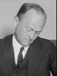

NYC Mayoral Election Simulator
Election of 1917
John F. Hylan
Party:
Democrat
Bio:
SOON
Vote for John F. Hylan
John P. Mitchel
Party:
Fusion
Bio:
SOON
Vote for John P. Mitchel
Morris Hillquit
Party:
Socialist
Bio:
SOON
Vote for Morris Hillquit

William M. Bennett
Party:
Republican
Bio:
SOON
Vote for William M. Bennett